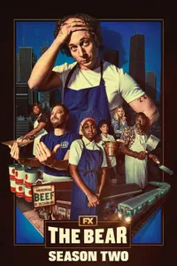
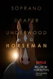

La serie se desarrolla en 2019 y cuenta la historia de un comediante y escritor llamado Donny Dunn, que mientras busca construir una carrera exitosa, comienza a ser acosado por una mujer obsesionada, lo que lo lleva a enfrentar un viejo trauma que llevaba mucho tiempo enterrado y con el que no había lidiado.

"The Bear" es una serie aclamada por la crítica que ha cautivado a la audiencia con su cruda e intensa representación del mundo culinario. La serie sigue la historia de un joven chef, Carmy, que regresa a su ciudad natal para administrar el restaurante de su familia después de una tragedia. La serie es conocida por su honestidad brutal, profundidad emocional y actuaciones excepcionales, especialmente la de Jeremy Allen White como Carmy.
La primera temporada fue elogiada por su intensidad y resonancia emocional, con un final que dejó a los espectadores en lágrimas. La segunda temporada continuó impresionando, con los críticos destacando el crecimiento de los personajes y un desenlace cautivador. La serie ha sido descrita como una joya en medio de producciones mediocres, ofreciendo una experiencia de visualización única y poderosa.

"BoJack Horseman" es una serie animada que mezcla comedia y drama de una manera única y profunda. La serie sigue a BoJack, un caballo antropomórfico que fue una estrella de televisión en los años 90, pero que ahora lucha con la depresión, la adicción y la búsqueda de significado en su vida.
Lo que hace a "BoJack Horseman" destacarse es su honestidad brutal y su disposición a abordar temas difíciles como la salud mental, el fracaso y la redención. El humor negro se entrelaza con momentos profundos que invitan a la reflexión.
